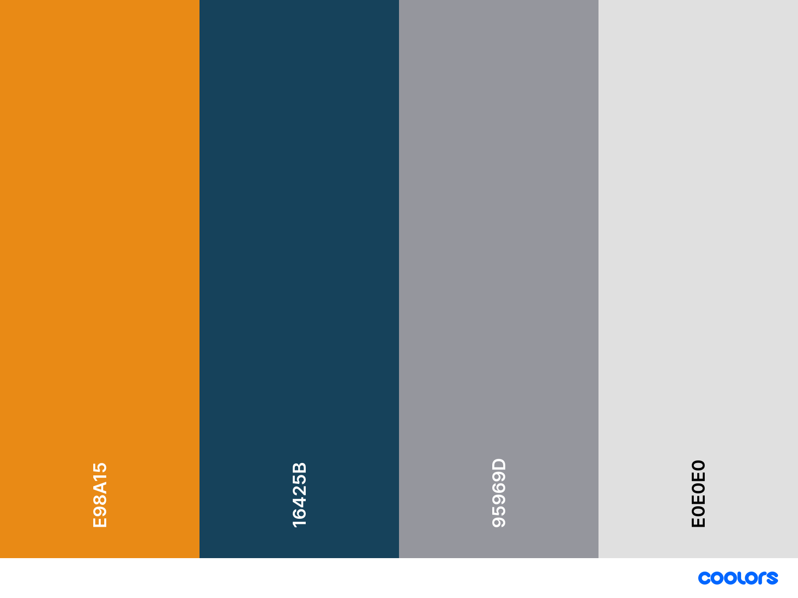

Color Scheme
I decided on Spanish Gray (#95969D) as a background color with black main text. Indigo Dye (#16425B) I chose for the header and footer background colors and then went two shades darker to Prussian Blue (#102F42) as a heading color. Fulvous (#E98A15) and 4 hues lighter to Mellow Apricot (#F1B46A) are used as bright accent colors. Header and footer text is Gainsboro (#E0E0E0), a light gray.